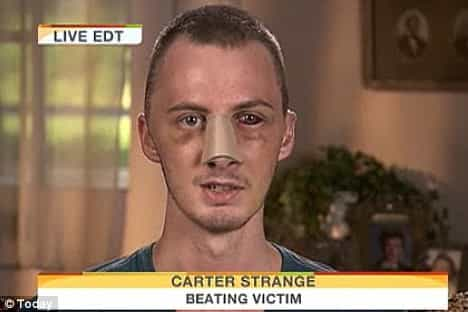

< < < Back
Why Is Obama Completely Ignoring The Dallas Shooter’s Motive Of Wanting To Kill White People? – Return Of Kings
America has a race problem. But it is not the typical race problem you hear about on the six o’clock news or in your social media news feed. Rather, it involves people like Barack Obama refusing to call deliberate attacks on white people racist. Despite Dallas police, including the city’s commissioner, outlining how the shooter Micah Xavier Johnson said he wanted to kill white people, especially white law enforcement personnel, Obama claims that the assailant’s motives are “hard to untangle.”
Whilst trying to play global sheriff in Warsaw, Poland during a meeting of NATO leaders, Obama even went so far as to suggest Johnson was mentally ill and therefore not criminally culpable. Return Of Kings is trying to track down, so far without success, Presidential comments in which Obama described the police shootings of black men as examples of mental illness. And, contrasting with the premeditated, indefensible Dallas tragedy, the use of lethal force by police officers is almost always proven to be justified and/or in self-defense.
Compare this lukewarm response with the gushing solidarity Obama showed towards gays, lesbians, and transgenders after the Orlando gay nightclub shootings. He called the slaughter an “act of terror” and an “act of hate,” the latter description clearly indicating he thought it was a hate crime. But in the case of Dallas, we have a dual hate crime posited on the victims’ profession and their race. So why is this not being emphasized?
Obviously, as SJWs have repeated to themselves for decades, whites cannot be victims of racism. The unemployed white guy in Michigan or the struggling white plumber in California is unable to call the race card whenever a certain percentage of other white men are in Congress or on the boards of Fortune 500 companies.
An ugly history of looking the other way

Similar to the Dallas police murders, the racial implications of attacks like the one unleashed on Carter Strange by eight black men are ignored by the mainstream media and political elites alike.
The hypocrisy evident after the Dallas police officer murders is simply the most recent example in a long-running campaign of selectively decided racism. Obama is by no means a trailblazer for glossing over the disproportionate number of violent assaults on whites. After the death of black youth Trayvon Martin, for example, a number of Caucasians reported being attacked by blacks claiming revenge for the African-American community. Most of these reports were unhelpfully dismissed by fearful and sometimes even obsequious police departments, despite incontrovertible proof of the actual attacks. Given the violence unleashed on Dallas police in recent days, it is perhaps understandable that law enforcement is unwilling to properly challenge the “only whites can be racist” thesis.
Even when black attackers admitted to unambiguously racist motivations, the stories of their victims received only the most casual treatment. Of course, the mainstream media has to sometimes pay lip service to the reality of two-way racism, but it only does so begrudgingly. Practically-speaking, major publications’ general silence surrounding minority-on-white attacks supports the perverse idea that only minorities can be victims of racial animosity expressed through physical violence.
Going back further to the Rodney King incident and the riots that followed, the blood-curdling attack on white truck driver Reginald Denny was ignored as a hate crime, notwithstanding the “racism” attached to the earlier police beating of King, a black man. In addition, unlike Denny, King was actually a convicted felon and had led LAPD officers on a dangerous high-speed chase. Not even ninety-one different skull fractures could convince the court system and political elites that maybe Denny was as much a victim of racism as liberals alleged King was. Obama’s insensitive comments about the Dallas police murders can thus be traced back to a longstanding political indifference towards wanton racial attacks against white people.
Why should justice for innocents depend on the color of their skin?
Michael Brown, pictured here robbing a convenience store, and who also tried to grab a policeman’s gun, will continue to receive the status of victim while the racist killing of five white police officers is attributed to “mental illness.”
In 2015, when America ironically had a black male Attorney-General, Eric Holder, the Department of Justice released the findings of the Michael Brown investigation. Brown, an African-American who had just finished robbing a convenience store, had been fatally shot by Officer Darren Wilson in Ferguson, Missouri, an incident which resulted in savage riots in multiple cities. Forensic evidence blew away the ridiculous racism allegations of SJWs and demonstrated that Brown had tried to take Wilson’s gun. Yet Brown is still treated like a victim of anti-black police racism.
Do not expect anywhere near the level of victimhood to be given to the officers killed in Dallas. After all, America’s own President has refused to give it to the five individuals doing their jobs in white skin when they were slain. Our society’s notions of victimhood have crashed to the point where a fraudulent “victim” is elevated above the massacring of real victims, whose sickening deaths were apparently confirmed as racist in nature by the killer himself.
Welcome to America: home of the SJWs, land of the morally depraved.
 If you like this article and are concerned about the future of the Western world, check out Roosh's book Free Speech Isn't Free. It gives an inside look to how the globalist establishment is attempting to marginalize masculine men with a leftist agenda that promotes censorship, feminism, and sterility. It also shares key knowledge and tools that you can use to defend yourself against social justice attacks. Click here to learn more about the book. Your support will help maintain our operation.
If you like this article and are concerned about the future of the Western world, check out Roosh's book Free Speech Isn't Free. It gives an inside look to how the globalist establishment is attempting to marginalize masculine men with a leftist agenda that promotes censorship, feminism, and sterility. It also shares key knowledge and tools that you can use to defend yourself against social justice attacks. Click here to learn more about the book. Your support will help maintain our operation.
Read More: Dallas’s SJW Mayor Blames Slavery For The Deaths Of Five Policemen